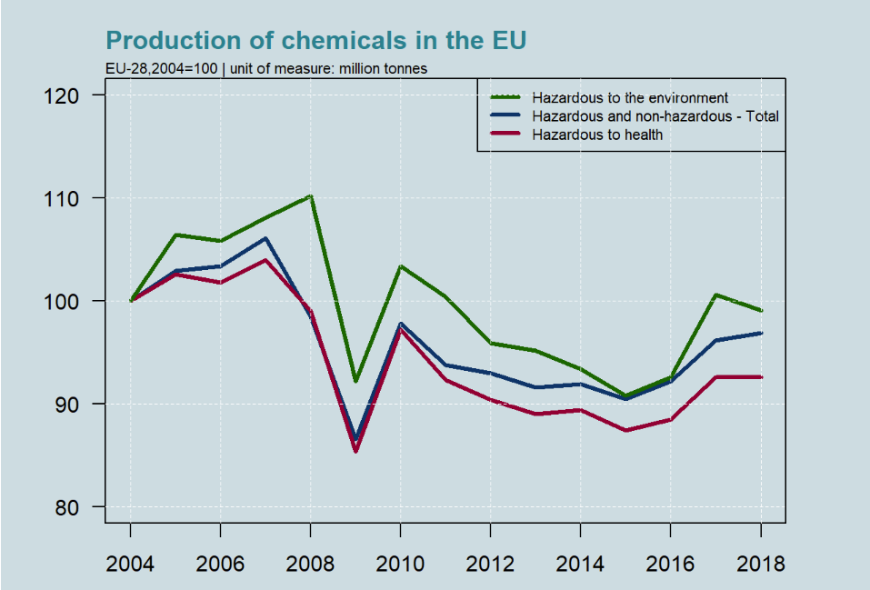
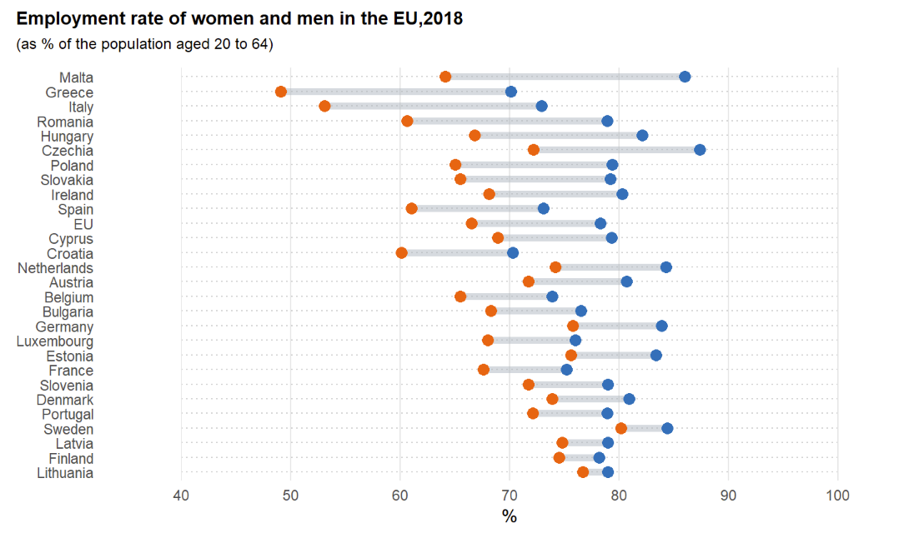
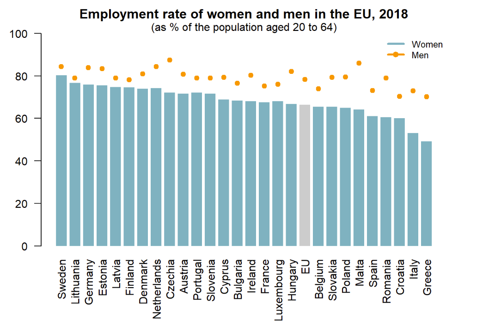
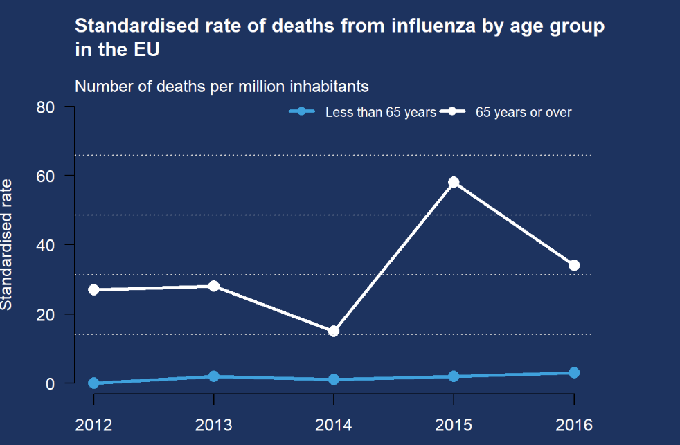
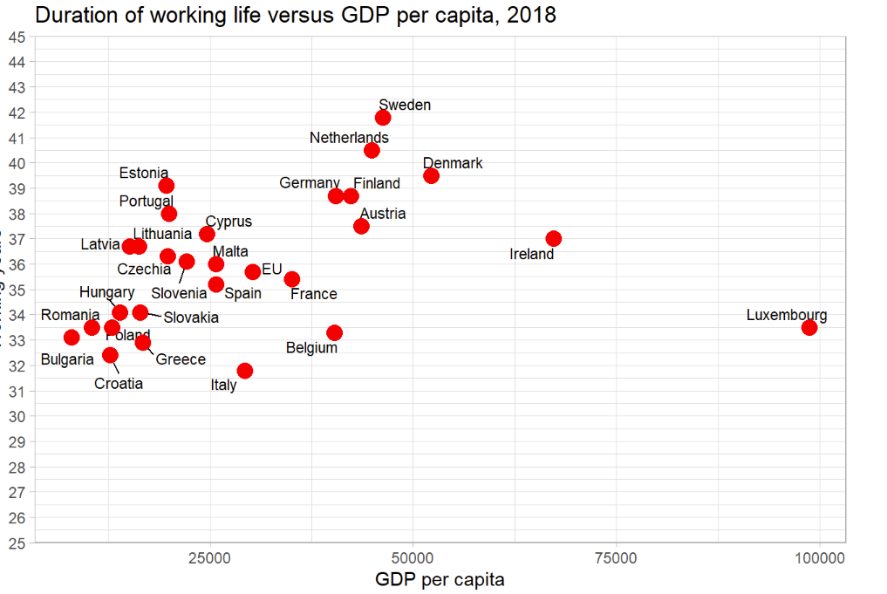
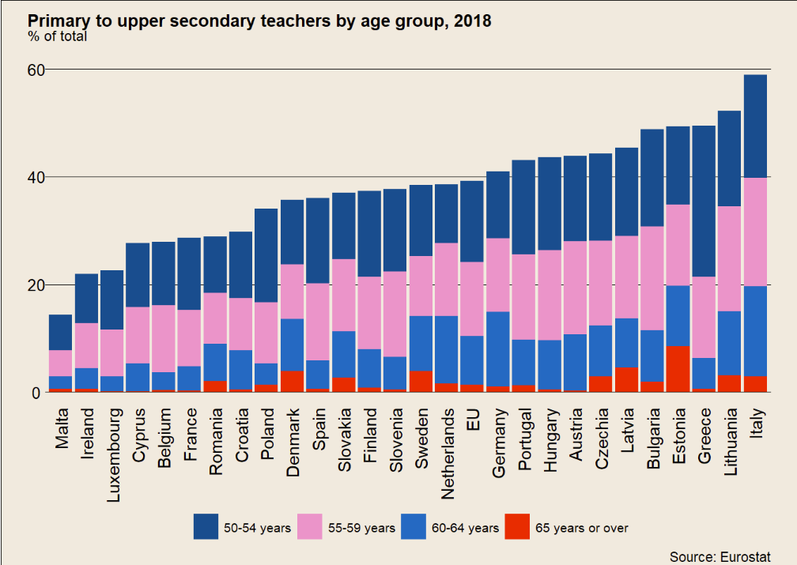

Official statistics with R
Reproducing Eurostat's graphs
Inspired by my experience with Eurostat (see this post, for more details), I decided to further enhance my skills by recreating some of the visuals using R for my
personal archive. My goal was to reacreate the exact same visual or in same cases I created new ones. Exploring various
visualization techniques, I gained valuable insights into effectively utilizing R to create a diverse range of data visualizations.
All the data used in the project are freely accessible to the public.
Below you can find some of my work, while on my GitHub repository, I present ten of these
graphs accompanied by the R code.





